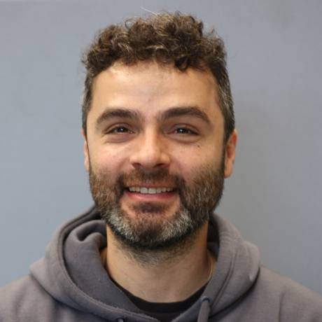

Convertimos señales desconectadas —clima, satélite, sensores, voz, libretas— en trayectorias de baja dimensión que anticipan el problema antes de que salte la alarma. Y ninguna recomendación sale sin una compuerta humana.
El cerebro tiene 86 mil millones de neuronas y ninguna decide sola: filtra lo redundante, acopla lo que se mueve junto y proyecta millones de estímulos en espacios de baja dimensión para decidir a tiempo. Las empresas tienen el problema inverso: terabytes de telemetría desconectada y ningún motor que los convierta en una decisión auditable.
Axioma «Dato es dato»: un lote, una turbina, un biorreactor o una cartera siguen leyes dinámicas idénticas. La misma matemática que reconstruye la dinámica de una red neuronal anticipa el deterioro de cualquiera de ellos.
La misma arquitectura, con las señales y la compuerta humana de cada industria. EG Agro es la primera en lanzarse; las demás comparten el motor y se desarrollan con socios de cada sector.
Gemelo dinámico del lote que funciona sin señal: captura en el surco, ventanas de manejo a 7, 14 y 28 días y borradores que firma el agrónomo.
Trayectorias vivas de solvencia en lugar de fotografías de buró; seguros paramétricos con gatillos auditables.
Salud de maquinaria: vibración, corriente, presión y temperatura acopladas en una órbita de estabilidad.
Balance hidro-energético: radiación, viento y caudal convertidos en despacho predecible con bandas P10/P50/P90.
Cada embarque perecedero como sistema vivo: grados-hora, esperas y calidad de origen en una vida útil real.
Navegación del lote por el corredor de sus mejores fermentaciones históricas («golden batch»).
Una app en el teléfono del productor y de su agrónomo: registra lo que pasa en el surco (voz, fotos, lecturas, recorridos de plagas y polinización) aunque no haya internet; un motor en servidor propio lee clima, satélite y sensores cada noche; y la inteligencia artificial corre dentro del teléfono, con compuertas: solo responde con datos del lote y nunca recomienda productos ni dosis. Las recetas nacen como borrador y solo valen con la firma del agrónomo.
PRELIMINAR: EG Agro está en pruebas con productores socios. Los umbrales provienen de guías públicas y se calibran lote por lote con el agrónomo.
Series, imágenes y voz sincronizadas, incluso capturadas sin red.
Filtra el ruido, imputa rezagos con control y mide el error fuera de muestra.
Mapea las cuencas de estabilidad, la velocidad de deriva y la probabilidad de persistencia.
Nada se publica si no supera la línea base; la IA jamás prescribe sin validación y firma experta.
Vigilan decenas de sensores por separado y avisan cuando el daño ya ocurrió. Visión aislada, aviso tardío, fatiga de alarmas.
Conecta todas las variables en un mapa y detecta la salida de la cuenca óptima: anticipación real, con la evidencia a la vista.
Suscripción por unidad (lote, equipo, línea) con la app sin señal y el motor nocturno de pronóstico y razonamiento.
Mapas de riesgo, scores y alertas integrados en su ERP, SCADA, plataforma de originación o tablero corporativo.
Co-diseño de espacios de estado y compuertas sobre sus propios datos históricos: 20 años de registros valen más que cualquier modelo genérico.
La tecnología procesa. El experto interpreta. El responsable decide.

Doctor en Ciencias Biológicas (UBA), neurocientífico computacional (UNAM / Erasmus MC) y miembro del SNII. Quince años diseñando modelos de reducción dimensional no lineal, sistemas dinámicos y redes neuronales profundas; publica en Nature Neuroscience, Science Advances, PLOS Biology y PNAS.
Treinta minutos alcanzan para saber si sus datos tienen una trayectoria que vale la pena leer. Ciudad de México y Buenos Aires; trabajamos en todo México y Argentina.